The admin portal
AltomateHR has two sides in one app. Owners and admins land in the admin portal, where the company is set up and payroll is run. Everyone else — employees and supervisors — lands in the employee app, where they clock in, claim, apply for leave and approve their team.
Payroll
Monthly runs worked out line by line — PCB, EPF, SOCSO, EIS, SKBBK and HRD Corp — then approved, filed and downloaded as the files each portal and your bank need.
Leave
Leave types, entitlements, carry-forward and balances. Unpaid leave feeds straight into payroll.
Claims
Expense and mileage claims, spend limits, and paying them out through Xero or through payroll.
Attendance
Phone clock-in with a location check, shifts, breaks, overtime, and the daily roll call.
Admins oversee — they don't approve. Claims, leave, attendance and overtime are approved by the supervisors set up in Company Structure, from their own queues in the employee app. The admin portal shows you where every request is and who it's waiting on.
Owner and Admin
| Owner | Admin | |
|---|---|---|
| Everything in the admin portal | Yes | Yes, unless the owner narrows it — a page an admin hasn't been given doesn't appear in their sidebar |
| System Settings → Admins (add admins, choose what they see) | Yes | No |
| Set another person's password | Yes | Yes — except an owner's |
Claims and Attendance are add-on modules. If your company doesn't have one, its page tells you the plan doesn't include it, and the Executive Overview leaves its cards out.
Signing in & finding your way
Go to hr.altomate.io and sign in with your work email and password.
- Forgot your password? — enter your work email, and a 6-digit code is emailed to you. Enter it with a new password (at least 8 characters).
- Coming from Altomate? — the "open altomate HR" button signs you straight in. If that link has expired or was already used, the sign-in page says so; go back and press it again. Because your account is managed in Altomate, New company and Log out aren't shown here — sign out from Altomate.
- The first time, you're asked to Enable notifications — say yes if you want to hear about approvals and requests as they happen.
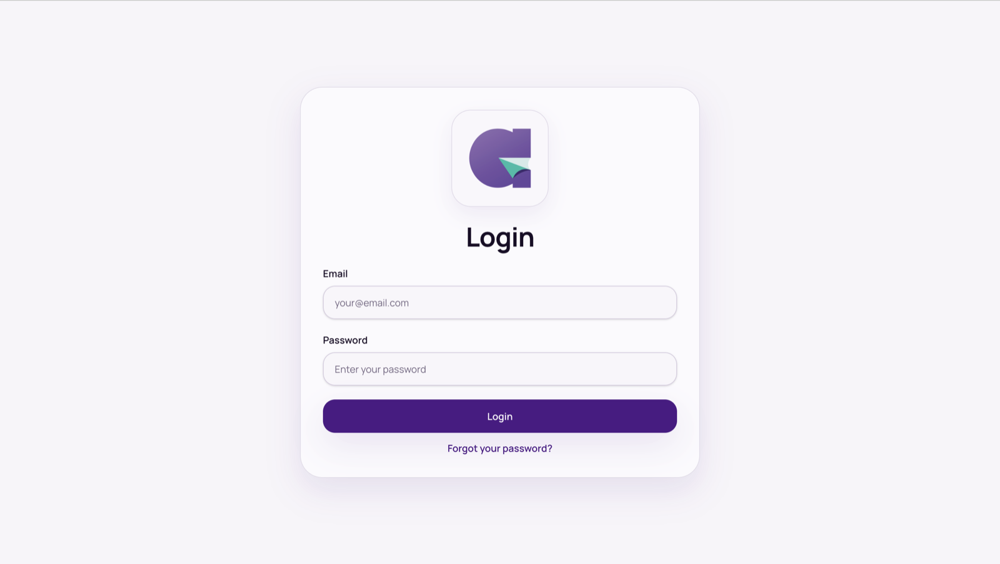
Signing in
The layout
- The sidebar: Executive Overview, Attendance, Claims, Payroll, Leave, Company/Employee, Activity Log, System Settings
- The company switcher — if you look after several companies, switch here. New company creates one with you as its owner.
- The bell — requests and decisions as they happen, with Mark all read
- The ⋮ menu — push notifications, What's new (our release notes, with a dot on the menu until you've read the latest), Guide (opens this guide in a new tab), Launch Appraisify, and Log out
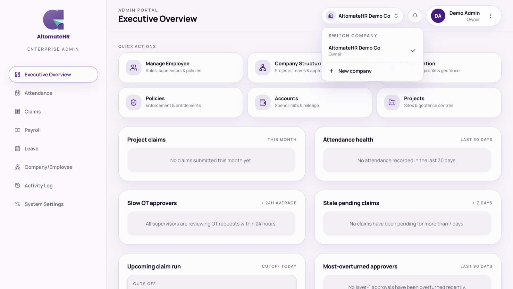
Company switcher
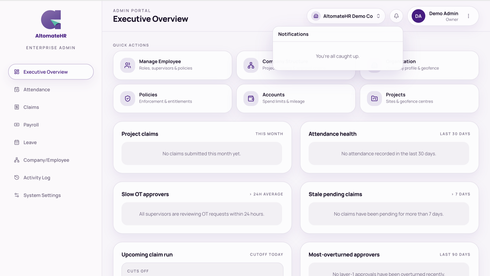
Notifications bell
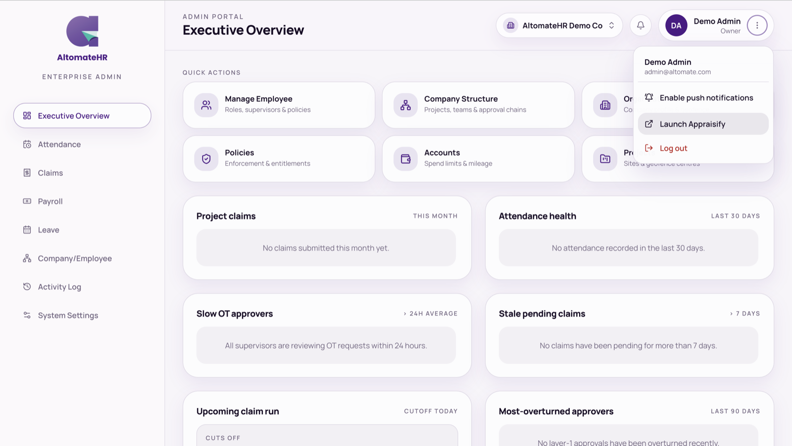
⋮ menu
The admin portal — sidebar, company switcher, bell and account menu
On a phone the sidebar becomes a row of pills across the top, with a second row for sub-pages.
A bar appears — “A new version of AltomateHR is available.” Press Reload.
Executive Overview
Where you land. Built around what needs a decision, not vanity totals.
- Quick actions — straight to Manage Employee, Company Structure, Organization, Policies, Accounts and Projects.
- Project claims — this month's spend per project. Claims
- Attendance health — on-time rate per project over 30 days, with late, missing and on-leave counts. Attendance
- Slow OT approvers — who averages more than a day to decide overtime.
- Stale pending claims — claims waiting more than 7 days.
- Upcoming claim run — days to your claim cutoff, and the value queued.
- Most-overturned approvers — supervisors whose approvals are later rejected higher up.
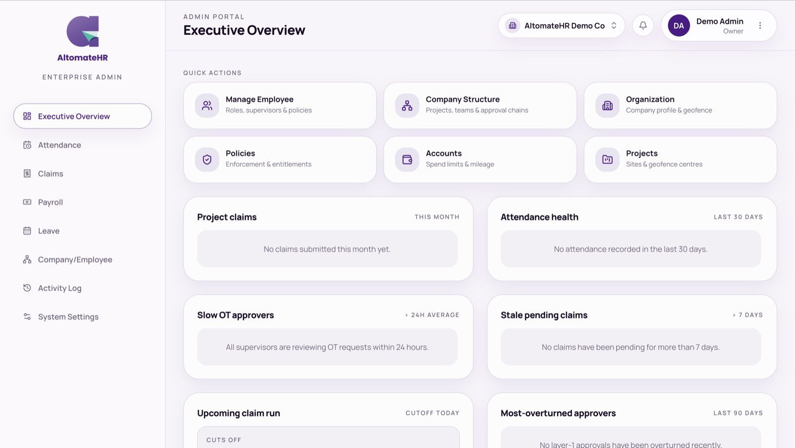
Executive Overview
System Settings
Done once, and revisited when something changes. Work through the pages in order.
Organization
The company name, and the Xero connection card — see Xero.
Accounts
The chart of accounts, in two tabs:
- Expenses — what a claim is coded to. Each can be Selectable for claims, carry a spend limit, and Allow mileage at its own rate. A Type column and a row of filters — All, Depreciation, Direct Costs, Expense, Overhead — match how Xero groups them; only the types you actually have are shown.
- Bank accounts — what a company-paid claim was paid from. Tick Offer for company-paid claims on the ones employees should be able to pick.
Below, Mileage defaults sets the company-wide rate and unit (km or miles). With Xero connected, Xero owns the list — press Sync from Xero after changing it there.
Projects
Your work sites. Open a project with Edit to set:
- Geofenced sites — one or more locations; Use my location fills in where you're standing.
- IP allowlist — office networks (Use my IP). Only checked for employees whose policy requires it.
- Work schedule — hours and working days that override the company default for this site.
Active and Archived tabs keep old sites out of the way. The Geofence radius card sets how close counts as on-site (200 m by default).
Work Schedule
The company's default hours and working days, and the public holidays — pick a Country and Year and press Import, then add or remove any by hand. The calendar shows working days, rest days and holidays at a glance.
Policies
Reusable rules you assign to people instead of setting each one individually: which modules they can use, the attendance checks (geofence, IP allowlist, capturing location, auto clock-out), salary type, overtime method (cash or time bank), OT rates, and leave entitlements. One policy is the default, marked with a Default tag wherever policies are listed or picked — it's what a new hire gets unless you choose another.
Admins Owner only
Add admins and choose what each one can see — full access, or only the modules you tick (Employees, Leave, Projects, Teams, Accounts, Policies, Overtime, Claims, Attendance, Payroll, Activity log). Anything you leave out disappears from that admin's sidebar and they can't open it. Owners are listed too, marked Owner · full access — an owner's access can't be restricted.
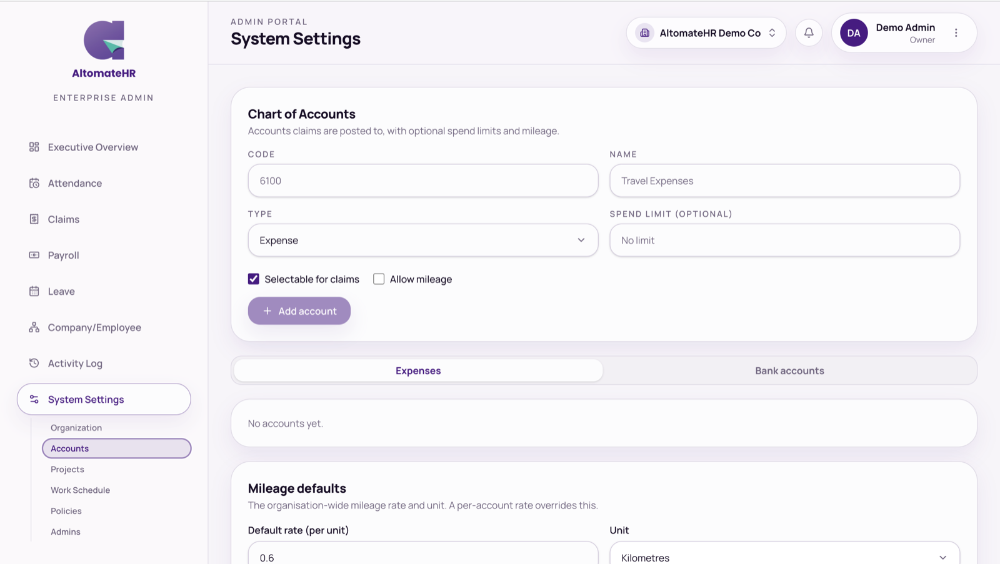
Accounts
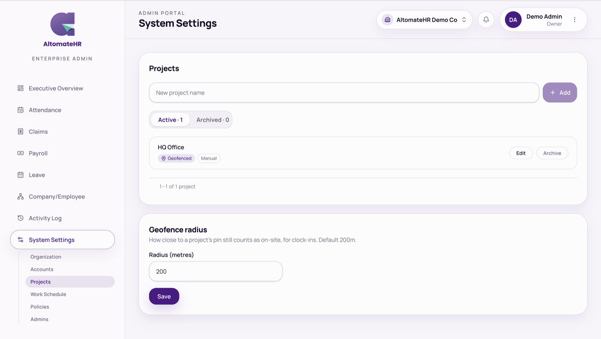
Projects
Accounts and Projects
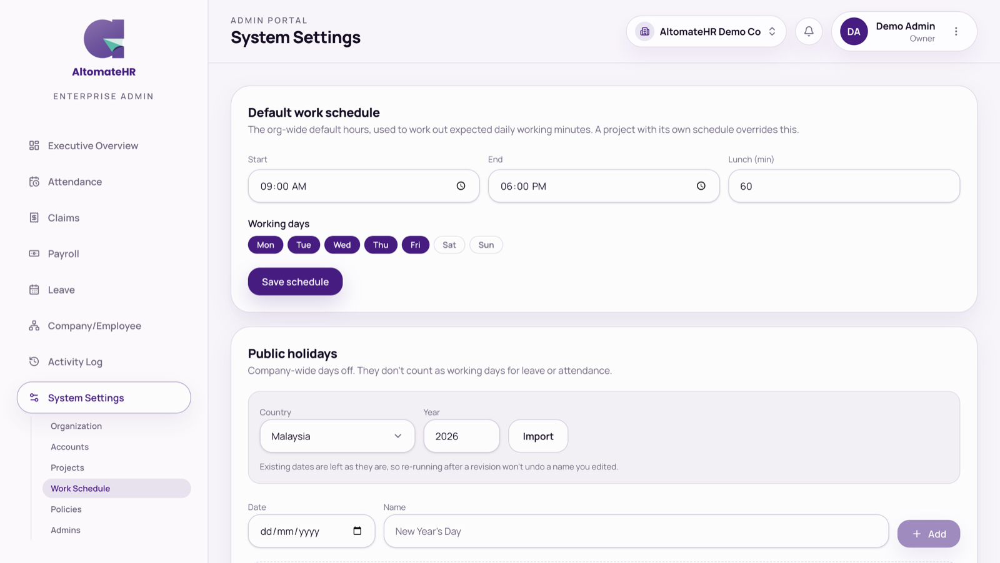
Work Schedule
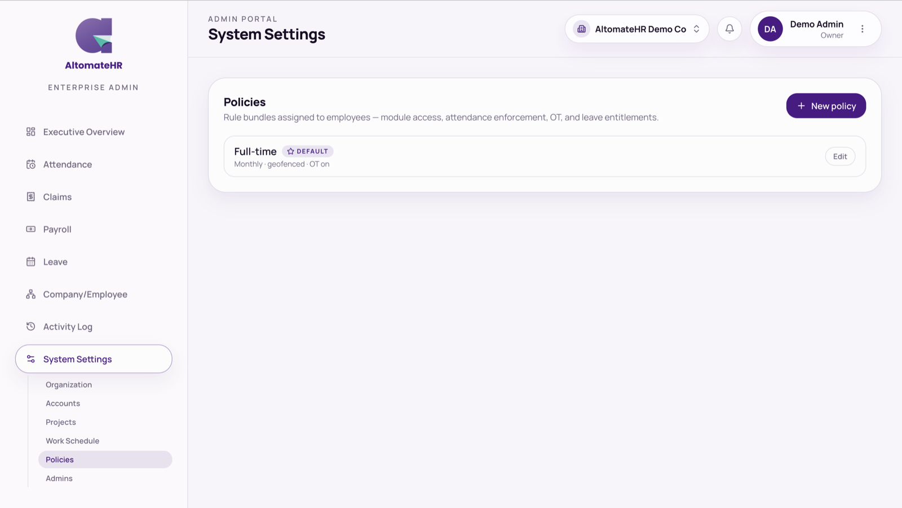
Policies
Work Schedule and Policies
Payroll settings
Under Payroll → Settings. Four sections, each marked Completed, Required or Optional so you can see what's left.
General
- Working-days rule — calendar days in the month, or 26 days.
- EPF defaults and your EPF employer no.
- HRD Corp levy — whether you pay it, the rate, and your HRD Corp employer no.
- PCB compliance — auto-apply the RM 350 SOCSO + EIS relief.
- Payroll disbursement bank — Maybank, CIMB, Public Bank or Hong Leong, with the account details. This decides which bank file a run produces. Choose “Other bank” if you pay salaries another way.
- Xero sync on submit — post the payroll journal to Xero when a run is approved.
Form E (LHDN)
Your employer particulars: employer name, LHDN employer no. (E number), SSM registration no., income tax reference type and no., PERKESO employer code, KWSP and HRD Corp numbers, contact details and address, zakat no., employer category and status, CP8D furnish type — then the declarant who signs Form E and your tax agent and firm, if you use one.
Employer name, E number, SSM number and PERKESO code are required. A run can't be sent for approval while any is missing — the app tells you while you're still preparing the run, not when you try to download.
Credentials
Store your KWSP i-Akaun, PERKESO ASSIST and LHDN e-PCB logins so whoever runs payroll has them. They're encrypted, but anyone who can open this page can reveal them.
Xero sync
With Xero connected: how expense lines are grouped, the tracking category for projects, and which Xero accounts each payroll line posts to.
Changes are saved with the bar that appears at the bottom — Save changes.
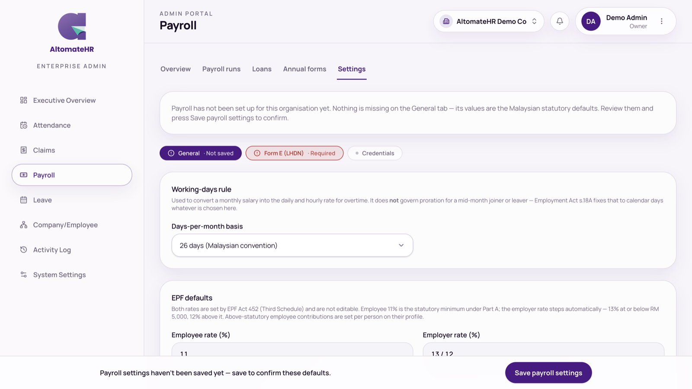
General
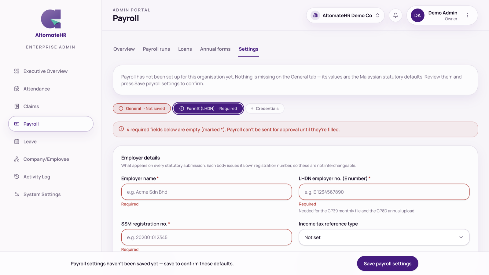
Form E (LHDN)
Payroll settings
Employees
Company/Employee → Manage Employee. Everyone you pay, and everything payroll needs to know about them.
The list
- Search, filter by role, and by status — Active (the default), Archived or All statuses.
- People are split into three boxes: need payroll setup (something's missing), ready for payroll (who a run will include), and archived (left the company — kept for their records, left out of runs).
- Anyone with no salary on file is named in a warning — they'd get a zero payslip, which stops the run being submitted.
Adding people
- Add employee — name, employee ID (required), job title, join date, email, date
of birth, role and policy. The policy starts on your default one. Their starting password is
their email followed by their birth month and day (e.g.
ali@company.com1123), or one you type. Tick Send a welcome email to have it sent to them. - Import — one spreadsheet to add new people or update everyone at once,
payroll, bank and statutory details included.
- Step 1 — Blank template for new hires, or Export current to update people already here. The file's READ ME sheet explains every column.
- Step 2 — choose what a blank cell does: Keep existing values (the safe default — a partly filled file can't wipe anything) or Erase existing values (use only when the file is the full, up-to-date record; you're asked to confirm, and Name, Role, Employee No, Salary Type and EPF/EIS can't be erased).
- Step 3 — upload it. An email already in the company updates that person. Rows that were imported but need a look — for example a nationality it didn't recognise, kept as typed — are listed as warnings. New passwords are shown once — copy them then.
- Export — Export employee details as Excel or PDF. Choose All fields or Choose fields, and tick Include archived employees if you want them. A PDF page fits about a handful of columns, so use Excel for a wide export.
- Salary adjustments — shown only if your access includes Payroll. A pay round for many people at once. Download template (everyone with their current salary), fill in New Salary — and optionally Effective Date, Reason and Notes — only for people whose pay is changing, then upload it. A new salary applies straight away, so the effective date can be today or earlier, not later. It's all or nothing: if any row has a problem, nothing is saved and the rows are listed. Each change goes into the person's salary history, and draft payroll runs are marked for a re-run.
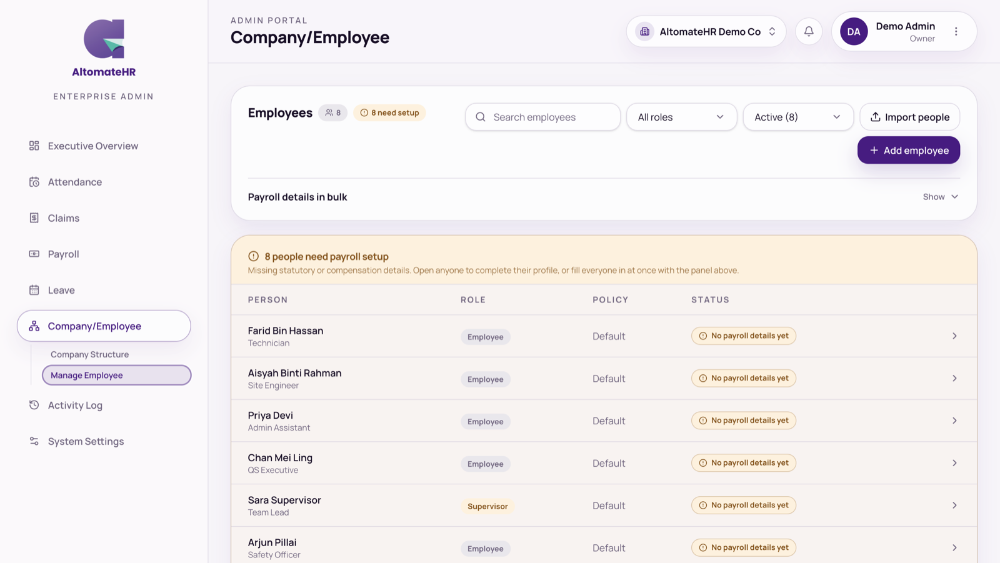
Manage Employee
An employee's record
Click anyone to open their record. Five tabs, each showing how many required fields are still empty (outlined in red):
| Tab | What's in it |
|---|---|
| Personal | Contact, identity (nationality is picked from a list), PR / tax resident / OKU, address, emergency contact, spouse, children |
| Employment | Monthly salary or hourly rate and its Salary history, fixed allowances and deductions, join date, employment status and contract end date, previous employment this year (TP3), and Archive — last day and reason |
| Statutory | EPF, SOCSO / EIS / SKBBK, income tax, the Special tax rate (15%), Bank / payout, and the LHDN forms for that person |
| Company | Employee number, job title, role, policy, department, and which projects, teams and approval level they sit in |
| Documents | ID scans, contracts, certificates |
Under Bank / payout, choose the employee's bank from the dropdown of Malaysian banks. The bank file refuses the whole run if anyone's bank isn't recognised — so a typo would stop everyone being paid.
Edits are saved with the bar at the bottom. Set password in the header sets a new password for them — hand it over outside email.
Changing a salary
Change the salary on the Employment tab and press save, and you're asked Why is the salary changing?
- Typo correction — the old figure was a mistake. It's fixed, and nothing is added to the history.
- Salary adjustment — a raise, promotion or restructure. Pick the Effective from date (today or earlier — the new salary applies straight away), a Reason (Raise, Promotion, Demotion, Restructure or Other) and optional notes, then Save salary. A date inside a month that's already on a payroll run is flagged on that run.
Salary history, under the salary, lists every real change with its date, reason and the old and new figure.
Other things worth knowing on the record
- Malaysian citizens — PR is off and tax resident is on, and both are locked: a citizen is always taxed as a resident.
- SOCSO number — Use ID number copies the IC / passport number from the Personal tab, since for most employees it's the same.
- Previous employment (TP3) — items with a yearly limit — press Add item for each tax-exempt allowance or TP1 relief the previous employer already gave this year, with the amount. It uses up that item's yearly limit here.
- Special tax rate (15%) — only for someone LHDN has approved (Returning Expert, knowledge worker or C-suite). Choose the approval and, if it's time-limited, the From month and To month; outside them PCB goes back to the normal resident rates.
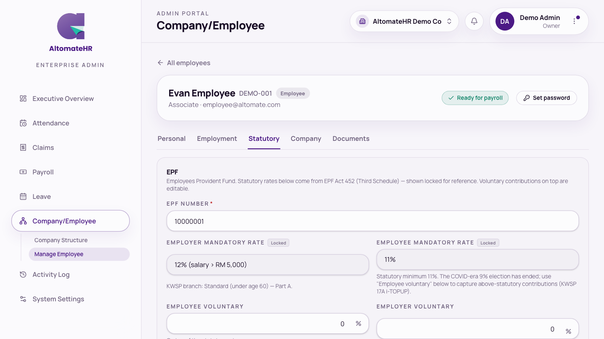
Statutory tab
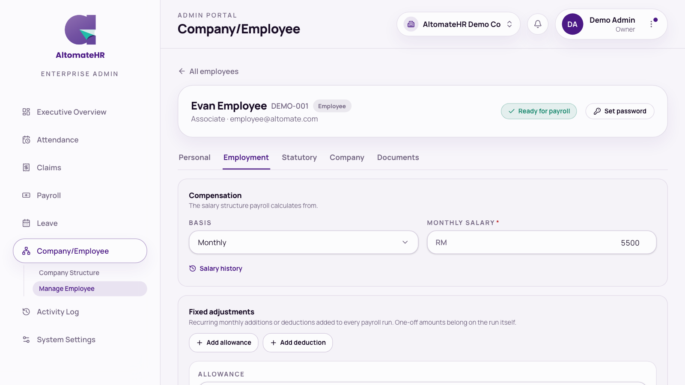
Employment tab
An employee's record
Company Structure & approvals
Company/Employee → Company Structure decides who approves what. Get this right and every request goes to the right person automatically.
Pick a project, then a team
Or press New to create a team — it's created in the project you've selected. Deleting a team asks you to confirm: its members are unassigned and their claims and leave stop routing through it.
Set the layers
1 to 6 levels (type a number in the Layers box), each with a label — e.g. Staff, Supervisor, Manager.
Tick who approves each module
For Claims, OT, Leave and Attendance, tick which layers must approve. A request climbs from the person's own level up through each ticked layer.
Add members
Add each employee at their level. People with the Employee role go in the bottom layer.
You can also place someone from their own record — Company tab → Add a project.
Owners and admins are never put in an approval chain. If a request has no one who can approve it, the admin portal flags it as “Nobody can approve” so you can fix the team.
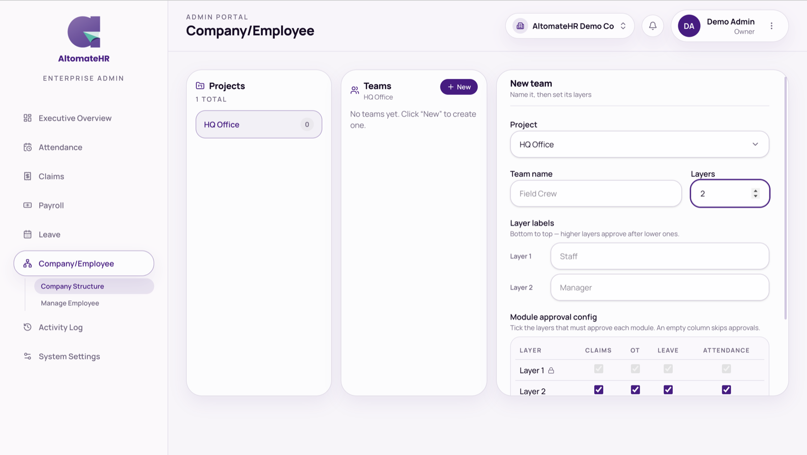
Company Structure — teams, layers and who approves
The monthly routine
Every month
Attendance
OptionalEvery month
Staff clock in from their phones; you see the whole company's day here. Four tabs.
Overview
- Today — the roll call. Status chips with live counts: On time, Late, On-site, Off-site, No clock-in, On leave. Click one to filter. Off-site rows show how far away they were and the reason they gave, with photos and a map link.
- Analytics — hours worked against the schedule: normal, expected, beyond shift, approved OT, rest day and holiday.
- Performance — how long each supervisor takes to decide.
- History — the approval trail and attendance records, exportable as CSV, XLSX or PDF.
Filter by project, team or name, and pick a date range.
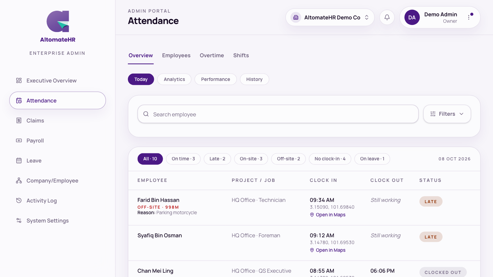
The day's roll call
Employees
A card per person. Open one for their year at a glance — a heatmap of on-time, late, absent and leave days — plus hours worked, recent attendance, and PDF exports.
Overtime
Every overtime submission with its before-work and after-work photos or PDFs (an employee can attach up to ten of each), filterable by status. Read-only — supervisors approve overtime from their own queue.
Shifts
Define shifts per project (e.g. Day 8:00–17:00), with working days and unpaid break minutes. Whether someone is late, and how many hours they were expected to work, come from their shift.
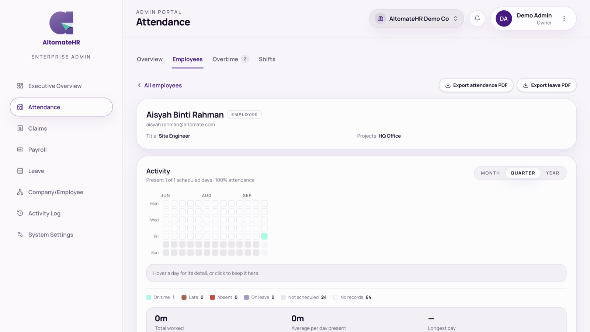
Employee attendance
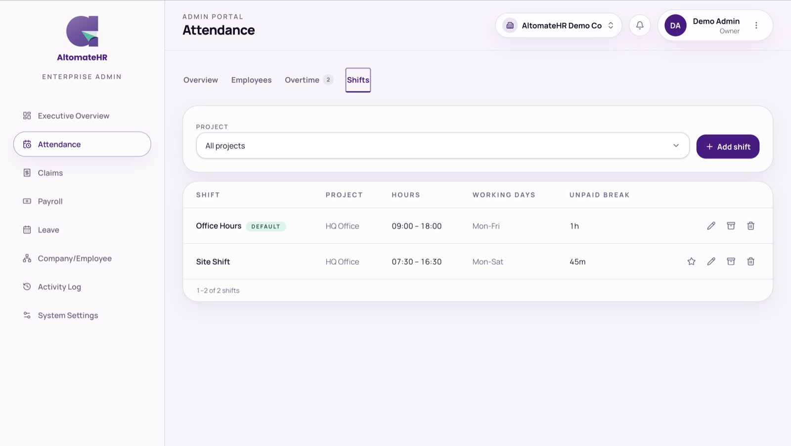
Shifts
An employee's year, and shifts
Claims
OptionalEvery month
Employees submit claims from the app; supervisors approve them. Here you watch the queue and decide how approved claims are paid.
Overview
What's stuck: claims pending over 7 days, the queue awaiting approval, claims over their spend limit, who each late claim is waiting on, where the money is going this month, and approvals later overturned. Every number opens the matching claims.
All claims
Filter by project, employee, own-money or company-money, and dates. The last column tells you where each claim stands — who it's waiting with, “In Xero”, “In the payroll run”, or a button to retry a Xero push that failed.
Settings
- Default currency.
- How approved claims are paid — one route for the whole company: Sync to Xero as a bill (choose Awaiting payment or Draft), or Add to payroll so they're reimbursed through the employee's pay.
- Claim run cutoff — the day of the month claims are cut off.
Export the list as CSV, XLSX or PDF from the button beside the tabs.
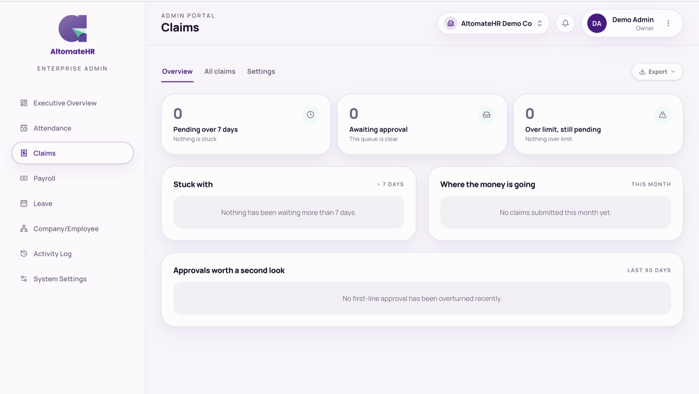
Overview
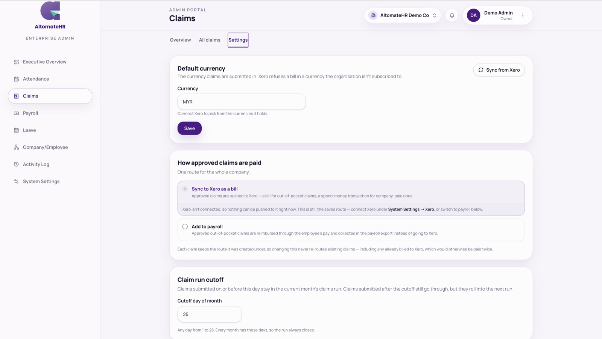
Settings
Claims
Leave
Every month
Employees apply from the app; supervisors approve. Here you set the rules and see everyone's balance.
- Overview — pending approvals, who's on leave today, what's been approved this year, and days used by type.
- History — every application, filtered by person, type, dates and status. An approved leave an employee has asked to cancel shows a Cancellation requested tag (or Cancellation declined if their approver said no).
- Balances — everyone's remaining days per leave type. Open a person to Apply on behalf (recorded as approved straight away), change or reset their entitlement, or export their leave report.
- Types — your leave types (code, name, annual days, paid or unpaid), and for Annual Leave: lump sum or pro-rated, and carry-forward with its expiry month and maximum days.
Cancelling someone's leave
Open an application in History and press Cancel this leave — it works on a pending request or on approved leave. Add a Reason if you like (the employee sees it), then Cancel leave (or Keep it to back out). Approved days go back into their balance and they're notified; it can't be undone, so they'd need to apply again. If they'd already asked to cancel, cancelling here completes it at once. Cancelling approved unpaid leave marks any open payroll draft for those dates for a re-run; a payroll already submitted isn't changed. The cancellation is recorded in the Activity Log.
Import brings in entitlements from a spreadsheet. Year rollover and monthly accrual run by themselves; the buttons under Maintenance are there if you need to run them early.
Approved unpaid leave is deducted in that month's payroll automatically. If it's approved after the month's payroll has been run, the run is marked for a re-run — see Running payroll.
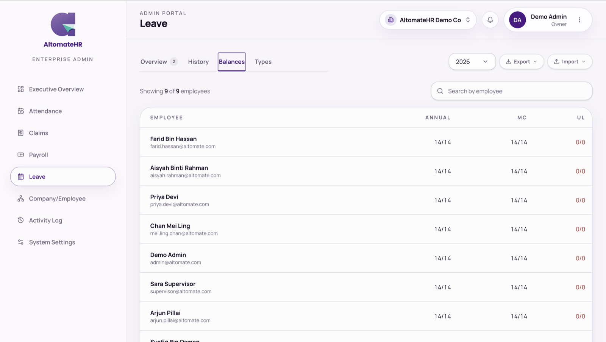
Balances
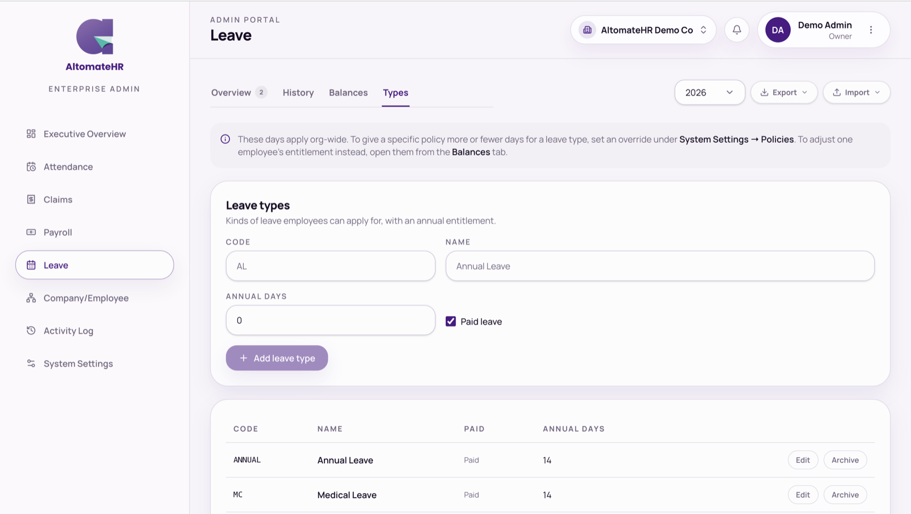
Types
Leave balances and types
Running payroll
Every month
Payroll → Payroll runs. One run per month: draft it, run payroll, check it, send it for approval, then approve and file.
Create the draft
Create draft — pick the month and year, and which policies and employees to include. Only people whose records are complete can be included, and only employees and supervisors are on payroll — owners and admins aren't.
Run payroll
Run payroll works out everyone's pay — salary, overtime, unpaid leave, allowances, loan repayments, and every statutory line — from their current records and the month's approved overtime, leave and claims.
Check and adjust
Open anyone's line with Edit OT / adjustments to change worked hours, overtime, or add a one-off allowance, deduction or expense for this month. Reimbursed claims lists approved claims waiting to be paid — add them to this run. Unpaid leave isn't offered as an adjustment — it's deducted automatically from approved unpaid leave. The Needs attention tab lists anyone whose net pay would be negative, anyone on RM 0.00, missing fields the statutory files need, and anyone left out. While the run is still a draft, the download button on a person's row gives a preview of their payslip, watermarked DRAFT.
Re-run if anything changed
After an adjustment, just press Re-run payroll. Adjustments carry over; the payslip lines are rebuilt from them.
Send for approval
Send for approval. The approver either presses Approve and file, or Send back to draft with a note.
If something a draft uses changes after payroll was run, the run is marked Stale and can't be sent for approval until you press Re-run payroll. That happens when any of these change:
- an employee's payroll details, or a salary change
- a loan
- approved unpaid leave or overtime in that month
- payroll settings, or year-to-date figures imported
- an adjustment or an attached claim
- It's stale — re-run it.
- Someone's net pay would be negative — their deductions are more than their pay. (RM 0.00 is allowed, for example a director paid nothing; the run notes them, and the bank file leaves them out.)
- A required employer or employee field is missing.
- The previous month hasn't been filed yet — months are filed in order.
Once a run is approved, a LHDN payment receipts card appears on it. Enter the receipt number and date LHDN issued when you paid that month's PCB (MTD) — and CP38, if you had any — and press Save receipts. They're printed on each employee's PCB 2(II) statement; no figure changes.
Made a mistake after filing? Revert to draft reopens it. Any later months that were worked out from it go back to draft too — the app lists them before you confirm.
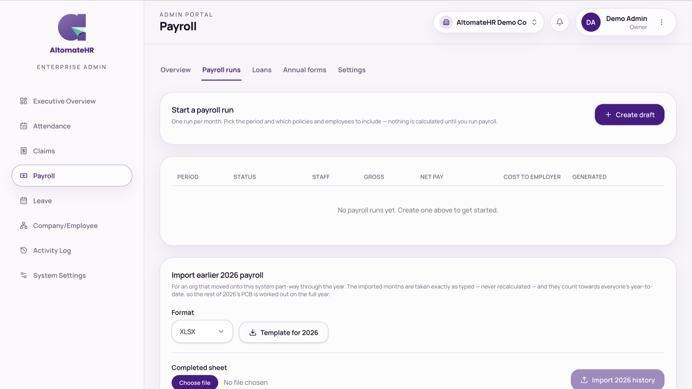
Payroll runs
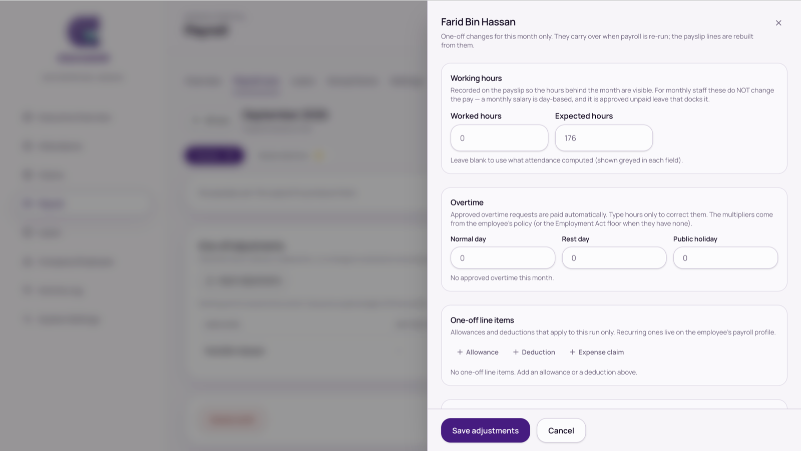
Adjustments drawer
A payroll run
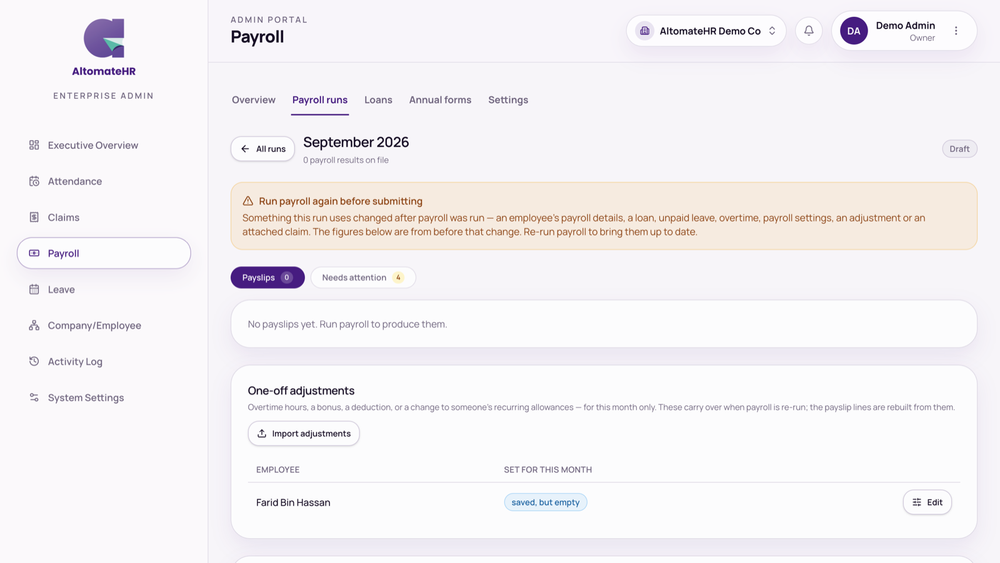
When a run needs re-running
The Payroll Overview
The first tab sums it up: runs waiting for your approval, employees not ready to file, drafts to re-run, the latest run's totals, and everything filed so far this year.
Files & payslips
Every month
Once a run is approved, Documents and files opens. Tick what you need and Download selected.
| Group | Files | Where it goes |
|---|---|---|
| Reports | Payroll Summary, Payment Schedule, PCB Calculation Details | Your records / approver |
| Statutory | EPF Contribution CSV | KWSP i-Akaun |
| SOCSO + EIS Contribution TXT (v1) | PERKESO ASSIST — for months before June 2026, or while PERKESO still accepts either layout (June to September 2026) | |
| SOCSO + EIS + SKBBK Contribution TXT (ASSIST 2.0) | PERKESO ASSIST 2.0 — compulsory from June 2026 | |
| PCB / MTD TXT (CP39) | LHDN e-PCB | |
| TP1 / TP3 Claims List | Your records — everyone who claimed reliefs on Borang PCB/TP1 this month, or declared a previous employer on TP3 | |
| Payslips | Bulk payslips (a ZIP of PDFs), or Email all to each employee | Employees |
| Bank | The bulk payment file for your payroll bank | Your bank's portal |
The bank file follows your bank
- Public Bank — ECP Bulk Payroll (.xlsx)
- Maybank — Maybank2E universal payment file (.txt)
- CIMB — BizChannel@CIMB bulk payroll (.txt)
- Hong Leong — ConnectFirst, plus a ConnectBiz template
Set the payment date before downloading. The file is refused — with a message saying why — if a bank setting is missing or an employee's bank isn't recognised. If your payroll bank is “Other”, no bank file is produced.
Individual payslips can be downloaded or emailed from each person's row once the run is filed. Each row also has a button for that person's Borang PCB/TP1 (the reliefs they claimed, this month and year to date). Email all asks you to confirm first — payslips can't be recalled once sent.
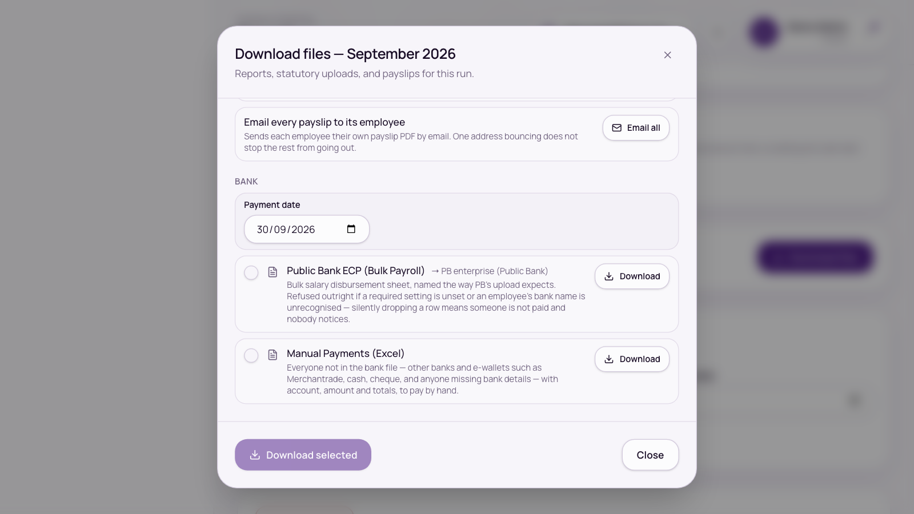
Downloading the month's files
Loans & advances
Payroll → Loans. Money lent to an employee, repaid from their pay.
Record a loan — the employee, the amount, and either over a number of months or a fixed amount each month, starting from the month you choose. Each payroll run deducts the instalment by itself. The table shows what's outstanding and the repayment schedule, with a warning under a loan if repayments run past the employee's leaving date or loans together are over half their monthly salary.
Once repayments have been taken, the amount lent and the months already filed are locked — but you can still change what's left:
- Re-plan — spread the balance over a number of months, as a fixed amount each month, set each month, or settle it all next payroll. Months already submitted or awaiting approval can't change; the page names the earliest month that can.
- Pause — skip a number of months, or pause until I resume it, from the month you pick. Nothing is forgiven: what was due moves into the next months that aren't skipped, so the loan ends later. Skipped months show as “skipped” in the schedule.
- Resume — on a paused loan, choose the month to start deducting again.
- Cancel — stops the remaining deductions.
A loan can only be recorded for someone who has saved payroll details.
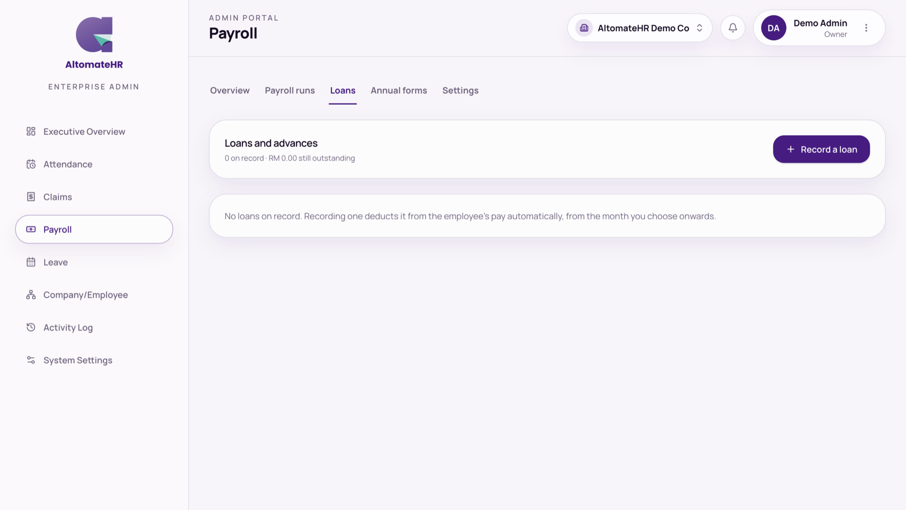
Loans and advances
Annual tax forms
Every year
Payroll → Annual forms. Pick the filing year — only approved runs count.
- Form EA (bulk) — every employee's EA in LHDN's C.P.8A layout, one page each, to hand out by 28 February.
- PCB 2(II) (bulk) — each employee's statement of PCB deducted, in LHDN's own layout, with the receipt numbers you saved on each month. Unlike the returns it doesn't wait for the whole year, so you can download it any time.
- Form E + CP8D — the employer's return and its employee list.
- LHDN e-CP8D upload — in LHDN's current 22-field layout. LHDN's e-CP8D takes the employee file (P) only; the employer master (M) is there for your records.
- CP8D converter — for a year you didn't run in AltomateHR: type the figures in and download the upload files. Each row also needs a Status, a Retire / contract end date (or the date they left) and their PERKESO amount (SOCSO and EIS together).
CP8D needs your LHDN employer number — the page warns you if it's missing. Each employee's status and contract end date come from the Employment tab of their record; if left blank they count as permanent, with retirement at 60.
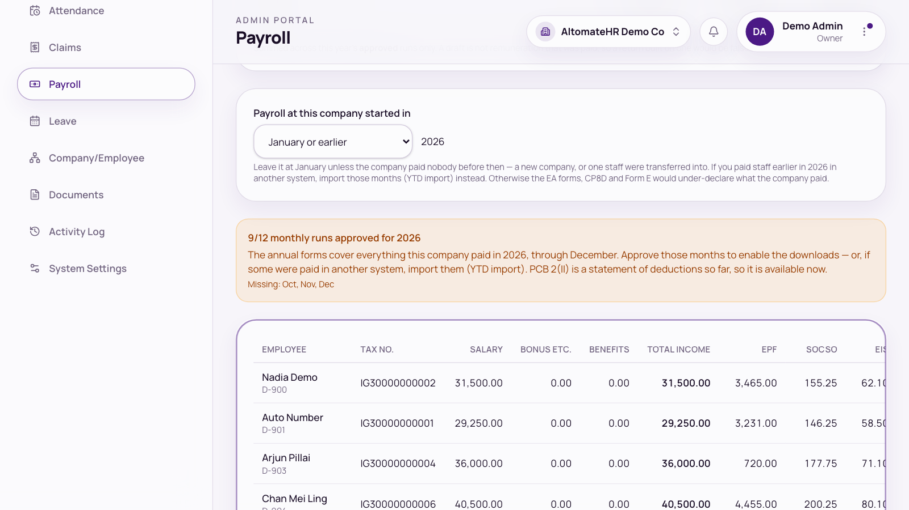
Annual tax forms
Per-employee LHDN forms
In an employee's record, Statutory → LHDN Forms: pick the year and download PCB 2(II), CP22 (new employee), CP22A (leaving), CP21 (leaving the country) or PCB/TP3. CP22A and CP21 open as soon as you've set their Last day (Employment tab → Archive) — you don't have to archive them first — and show a deadline badge counting down to 30 days before that date.
Starting mid-year
Joined partway through the year? Bring in what's already been paid so PCB carries on correctly instead of starting from zero.
At the bottom of Payroll runs, Import earlier payroll: download the template for the year, fill in each month's figures, Preview, then import. Imported months are never recalculated and count toward everyone's year-to-date. The preview has a search box, so you can find one person by name and check their figures.
For someone who joined from another employer this year, fill in Previous employment (TP3) on the Employment tab of their record.
Xero
Connect in System Settings → Organization. Each company connects to its own Xero organisation.
- Connect — sign in to Xero and choose only this company's organisation.
- Chart of accounts — Xero owns it while connected; Sync from Xero in Accounts. Accounts no longer in Xero are archived.
- Projects — pulled from Xero Projects, or from the options of a tracking category you choose. Once you choose a category, it is the project list: projects made by hand, or not in that category, are hidden from the pickers (clearing the category brings them back).
- Claims — approved claims become a bill (own money) or a spend-money transaction (company money).
- Payroll — the payroll journal is posted when a run is approved, if you've switched it on. In Payroll → Settings → Xero sync, the expense lines offer expense accounts and the payables (EPF, SOCSO, EIS, PCB, net salary) offer liability accounts — sync from Xero first if a list is empty. A saved account of the wrong type is flagged so you can pick again.
- Reconnect if the card says the connection has stopped working; Disconnect removes AltomateHR from that Xero organisation.
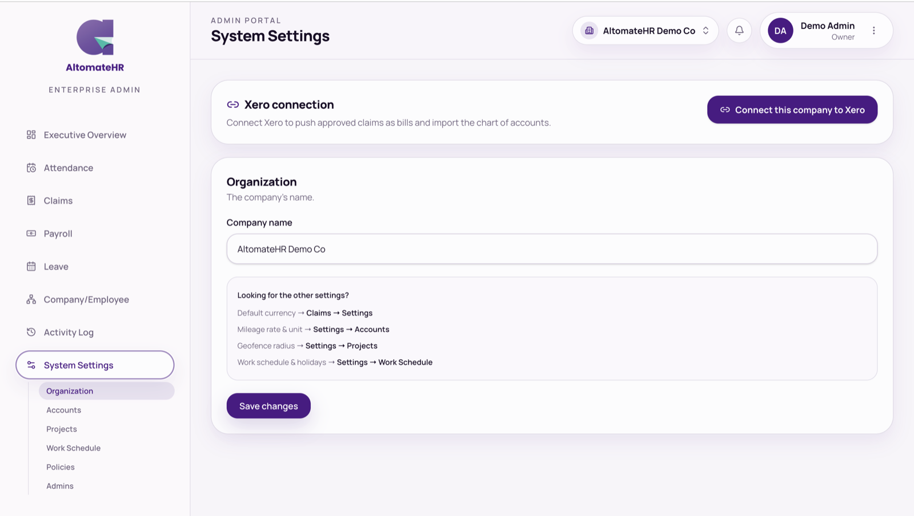
The Xero connection
Notifications & the app
The bell shows requests and decisions as they happen. Turn on push notifications from the ⋮ menu to get them on your phone or computer even when AltomateHR isn't open. The same menu has What's new for our release notes and Guide to open this guide.
AltomateHR runs in the browser. On a phone, add it to your home screen (iPhone: Share → Add to Home Screen; Android: menu → Install app) and it opens like an app.
Activity Log
Who did what, and when — sign-ins, settings, people, teams, accounts, projects and Xero, and any leave that was cancelled (filter by Leave cancellations). Open a row to see what changed, before and after.
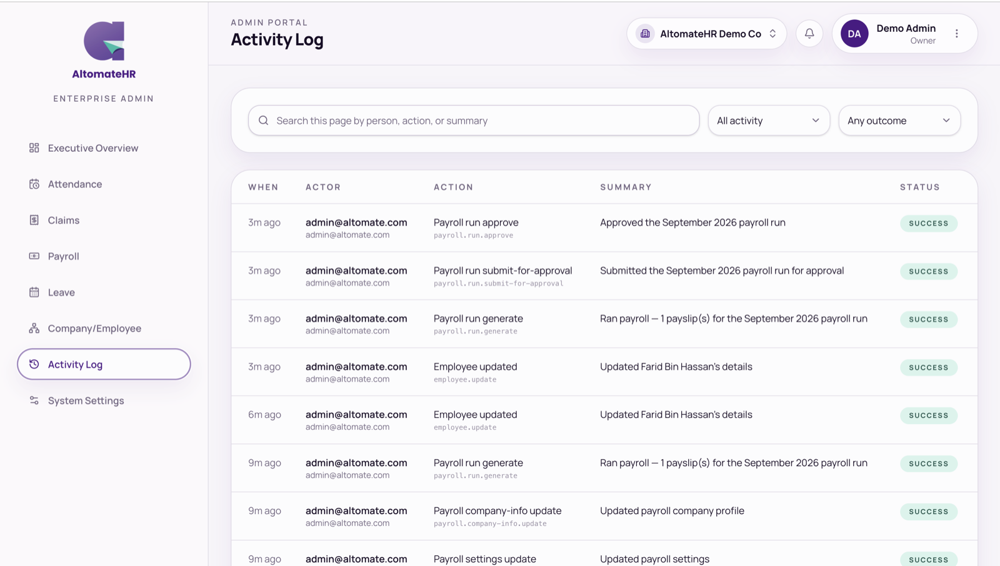
Activity Log
Common questions
Why can't I approve a claim or leave from the admin portal?
Approvals belong to the supervisors in Company Structure, from their queue in the employee app. The admin portal shows who each request is waiting on — if it says “Nobody can approve”, add an approver to that person's team.
Why can't I send the payroll run for approval?
The message beside the button says why: the run needs re-running, someone's net pay would be negative, a required field is missing (See what's missing), or last month hasn't been filed.
The bank file was refused.
Either a bank setting is missing in Payroll → Settings, or an employee's bank isn't one the app recognises — pick it from the dropdown in their record, then download again.
Someone left. Do I delete them?
No — archive them (Employment tab → Archive, with their last day). They drop out of future runs but keep every payslip and form.
A new employee can't sign in.
Their starting password is their email followed by their birth month and day, so their date of birth must be on file. Or use Set password on their record.